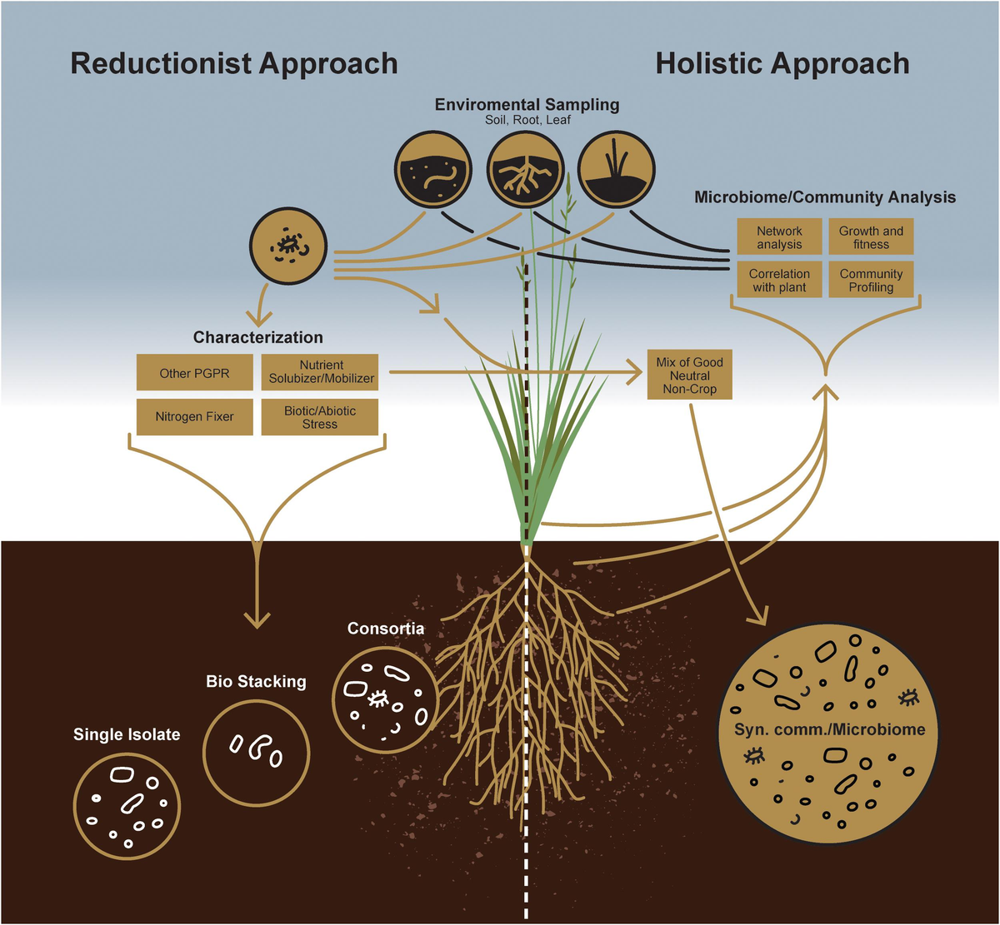

Evaluation of Fungal Communities in Maize Rhizosphere Soil for Sustainable Agriculture
Project Overview
This project aimed to evaluate fungal diversity in the rhizosphere soil of maize plants in Oyo State, Nigeria, using statistical analysis of species abundance and community structure. The project provided insights into the ecological roles of dominant fungi like Aspergillus and Trichoderma in improving soil fertility and supporting sustainable agricultural practices.
Tools & Technologies
I used SPSS to conduct ANOVA and descriptive statistics for analyzing fungal abundance and diversity. The Shannon-Wiener index was calculated to assess species richness, and cluster analysis was applied to identify patterns across different sampling locations.
Methodology
ANOVA revealed significant differences in fungal abundance across various farm locations (p < 0.05). The Shannon-Wiener index showed high species richness in areas with organic farming practices. Cluster analysis grouped similar fungal populations, indicating that specific environmental factors influence fungal diversity.
Results & Interpretation
The analysis showed that farms with high organic matter had a greater abundance of beneficial fungi, particularly Trichoderma spp., which is known for improving soil structure and suppressing pathogens.
sodiqadekunle54321@gmail.com